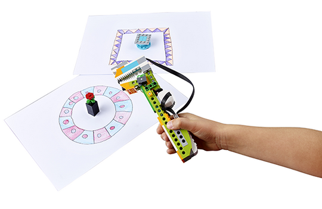
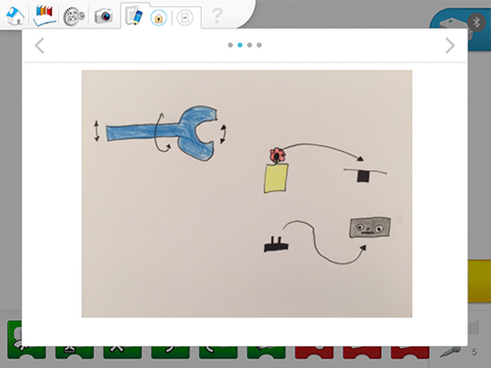

Diskussionsfragen
-
Welche Bewegungen kann man mit der Hand ausführen?
Die Schülerinnen und Schüler werden wahrscheinlich Wörter wie „greifen“, „festhalten“ und „werfen“ verwenden, um Bewegungen zu beschreiben. Lassen Sie sie genau beschreiben, wie sich die Finger bei diesen Bewegungen verhalten.
-
Welche Rolle übernehmen Muskeln in eurer Hand?
Die Muskeln sind für alle Bewegungen verantwortlich.
-
Wie kann man einen künstlichen Arm bauen?
Man kann mit einem Motor Bewegungen ausführen, die den Bewegungen einer menschlichen Hand sehr ähnlich sind. Man kann damit auch Druck auf Objekte ausüben, um sie festzuhalten.
Szenische Einführung für dieses Projekt
Die Schülerinnen und Schüler müssen bei diesem Projekt kleine Objekte bewegen. Stellen Sie sicher, dass im Klassenzimmer ausreichend Platz verfügbar ist, um den mechanischen Greifer einzusetzen und die Objekte zu bewegen. Der genaue Abstand zwischen der Blume und dem Tisch ist nicht wichtig. Er sollte allerdings nicht größer als einen Meter sein.

Probleme vereinfachen können (Zerlegung)
Diese Projektphase konzentriert sich auf die Entwicklung der Kompetenz „Zerlegung“. Das Hauptaugenmerk sollte daher darauf liegen, den Schülerinnen und Schülern beizubringen, wie sie das Problem zerlegen können.
Anders ausgedrückt:
Können die Schülerinnen und Schüler das Problem ohne Hilfestellung erklären?
Können die Schülerinnen und Schüler beschreiben, wie sie am Ende beurteilen, ob sie das Problem erfolgreich gelöst haben oder nicht?
Können die Schülerinnen und Schüler das Problem in kleinere und leichter zu bearbeitende Teile aufteilen?
Vorschlag für die Zerlegung des Problems:
Welche Bewegungen wollen wir nachahmen?
Welche Objekte müssen bewegt werden und wie machen wir das?
Welche Reihenfolge brauchen wir dafür?
Im Folgenden finden Sie ein Beispiel dafür, wie die Schülerdokumentation mit dem Dokumentationstool aussehen könnte:

Die Schülerinnen und Schüler sollten beispielsweise dort, wo der Text grün hervorgehoben ist, ihre Arbeit dokumentieren.
In der Erforschungsphase sollten sich die Rückmeldungen darauf beziehen, ob sich die Schülerinnen und Schüler aktiv an der Diskussion beteiligen, indem sie Fragen stellen und beantworten. Darüber hinaus sollten Sie einschätzen, wie gut sie die jeweilige Fragestellung verstehen.
Geben Sie Rückmeldungen auf einer Skala von 1 bis 4:
-
Die Schülerin/der Schüler ist nicht in der Lage, Antworten zu geben oder sich angemessen an der Diskussion mit der Klasse zu beteiligen.
-
Die Schülerin/der Schüler ist in der Lage, nach Aufforderung Antworten zu geben oder sich angemessen an der Diskussion mit der Klasse zu beteiligen.
-
Die Schülerin/der Schüler ist in der Lage, Antworten zu geben und sich an der Diskussion mit der Klasse zu beteiligen.
-
Die Schülerin/der Schüler ist in der Lage, während der Diskussion mit der Klasse Erklärungen umfassend auszuführen.
Spezifische Bewertungskriterien zum Beurteilen der Kompetenzen des informatischen Denkens finden Sie in der Lehrerhandreichung.